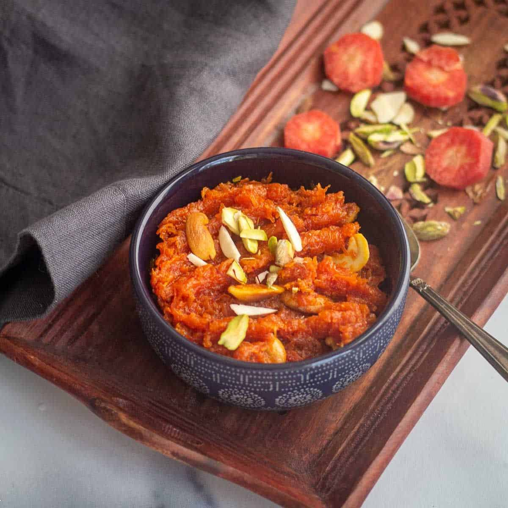

Carrot Halwa

Description:
Carrot halwa, or gajar ka halwa, is a traditional Indian dessert that's deliciously rich and creamy. This recipe uses whole milk, not condensed milk. Serve warm with vanilla ice cream for a real treat!
Ingredients:
- 2 tablespoons ghee or oil
- 2 pounds carrots, grated
- 1 ½ quarts whole milk
- 2 cups white sugar
- ½ cup raisins or sultanas
- 1 ½ teaspoons ground cardamom
- 1 pinch saffron threads
- 8 tablespoons chopped pistachio nuts
Steps:
- Heat ghee in a large saucepan over medium heat and add carrots. Cook and stir briefly, about 3 minutes. Pour in milk and increase heat; bring to a boil and cook, stirring constantly, for 5 minutes. Reduce heat to low and simmer gently, uncovered, and stirring occasionally until moisture evaporates, about 1 hour.
- Bring carrot mixture back to a boil; add sugar, raisins, cardamom, and saffron. Cook and stir until mixture has thickened, about 10 minutes.
- Ladle carrot halwa into 8 individual serving dishes. Top each serving with 1 tablespoon pistachios. Serve warm or chill before serving.
Other recipes: